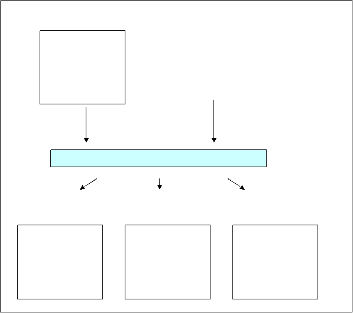

|
| VisualFIR |
Pantalla de codificar
La motivació per fer una transformació qualitativa de les dades reals i classificar-les aplicant les tècniques de la lògica difusa, es basa en que en les diferents etapes de la metodologia cal aplicar processos d’optimització a subconjunts de dades. Fent una classificació de les dades reduïm enormement l’espai de cerca, i s’aconsegueix molta més eficiència.
La contrapartida a aquesta eficiència és una pèrdua d’informació.(Per exemple dir que l’alçada d’una persona es classifica com ‘alta’ ens dóna menys informació que dir que la persona fa 1’95m d’alçada).
En la metodologia del FIR s’ha aconseguit no perdre informació en aquesta transformació definint tres components qualitatives que conserven tota la informació original de la dada quantitativa.
Component de classe (class): Classificació del valor.
Component de pertinença (membership): Mida de pertinença del valor dins la classe.
Component de costat (side): Costat que ocupa el valor dins la classe en funció del valor central.
A continuació es mostra un exemple de la representació qualitativa d’una variable de temperatura que duria a terme el procés de codificació del FIR:
|
|
Aquest sistema de codificació permet passat del valor quantitatiu al qualitatiu i a l’inrevés.
El mètode de codificació requereix d’un treball previ per definir les classes en que es vol discretitzar cada variable i quins han de ser els límits inferior i superior de cada classe. És aconsellable utilitzar un màxim de cinc classes, i hi ha diferents mètodes, com el clustering difús que ajuden a decidir sobre el número de valors de classificació. Per definir les fronteres de cada classe, també existeixen mètodes que es basen en el model “cru” i el nombre de classes decidit. Actualment en el SAPS-II s’utilitza el mètode de “igual freqüència”, que consisteix en definir les classes de manera que totes tinguin la mateixa distància entre els seus límits.
En l’exemple anterior de la temperatura seria:
|
|
Fred |
Fresc |
Normal |
Tebi |
Calorós |
|
Valor inferior |
-1 |
8 |
13 |
27 |
33 |
|
Valor superior |
8 |
13 |
27 |
33 |
50 |
Amb aquesta informació el mòdul de codificació ja pot obtenir les informacions qualitatives de classe i costat.
Per obtenir la informació de la pertinença, es poden aplicar dues fórmules:
La fórmula gaussiana:
Perti = exp ( - ti ( x - mi )2)
x és el valor quantitatiu a codificar.
mi és real i és la mitjana algebraica entre dues fronteres veïnes. (el valor central de la classe on s’ha classificat x).
ti > 0 i es determina de tal manera que la funció Perti tingui un valor de 0.5 en les dues fronteres(valor inferior i valor superior de la classe).
La fórmula triangular:
x és el valor quantitatiu a codificar.
mi és real i és la mitjana algebraica entre dues fronteres veïnes. (el valor central de la classe on s’ha classificat x).
d és real i és la distància entre el valor central de la classe i les fronteres.
El resultat d’aquest mòdul són tres matrius de les mateixes dimensions que la matriu d’entrada, el model ‘cru’ de dades. En una hi ha els valors corresponents a la component qualitativa de classe, la segona conté la informació de la funció de pertinença, i la tercera conté la informació de costat.
A continuació és mostra un esquema de les estructures d’entrada i sortida del procés:

La pantalla s’activa quan es prem la tecla 'codificar' de la pantalla
principal.
Si existeix una codificació prèvia en el directori en que s’està treballant , apareix una finestra per triar si es vol fer una nova codificació o es vol treballar sobre la codificació feta anteriorment. En el primer cas, apareix la pantalla de codificar preparada per llegir el fitxer de dades generat per la pantalla d’entrada de dades. En el segon cas, la pantalla de codificar s’obre amb la casella per modificar el nom del fitxer d’entrada inactiu (no es pot modificar), i amb els camps de les variables, ja emplenats amb la codificació anterior.
Dades d’entrenament
Visualitza els noms dels fitxers d’entrada i sortida i les variables del fitxer d’entrada amb la seva classificació.
Fitxer d’entrada
Nom del fitxer d’entrada de dades a classificar. El nom per defecte d’aquest fitxer, és el que s’ha posat com a sortida de la pantalla anterior (Pantalla de dades d’entrada). La modificació del nom del fitxer, es permet per si es vol classificar algun altre conjunt de dades. Quan es prem el boto de Llegir, si el fitxer no existeix, es restaura automàticament el nom del fitxer anterior.
Fitxer de sortida
Nom del fitxer on es guardaran les de dades classificades que serviran per la següent pantalla (Modelització) o per la mateixa pantalla de classificació.
Llegir
Polsador per llegir el fitxer de les dades d’entrada i carregar les variables a la llista de variables.
Si no existeix el fitxer de sortida, aquesta llista es carrega de la següent forma:
var = < Nom de la variable > Alg = < Nom d l’algoritme > Clust = < nº de classes >
El noms de les variables els extreu del fitxer de dades d’entrada, l’algoritme per defecte és el d’igual freqüència, i el nombre de classes per defecte és 3. Tots aquests paràmetres es podran modificar per la zona d’estudi.
Si existeix el fitxer d’estudi, la llista de variables es carrega de la mateixa forma, però amb els paràmetres d’algoritme i nombre de classes anteriors.
Replicar variable
Copia els paràmetres de la variables seleccionada de la llista de variables a totes les altres. Amb aquesta acció es perden els paràmetres antics.
Generar sortida
Prepara les variables per l’acció de codificació, buscant els llindars de cadascuna de les classes. Habilita el polsador Regenerar i actualitza la zona d’estudi.
Zona d’estudi
Variable
Nom de la variable que s’està estudiant. (Aquest camp només es pot modificar seleccionant una de les variables de la llista de variables).
Algorismes
Llista d’algorismes implementats per la codificació de la variables.
Paràmetres
Paràmetres que necessita cadascun dels algorismes.
Llista d’algorismes amb els seus paràmetres:
Concepte |
Exemple |
Descripció |
|
Var |
Var = D |
Indica el nom de variable a estudiar |
|
Alg |
Alg = EQ |
Indica l’algorisme amb que es classifica la variable. Els valors possibles podran ser els següent: Man: Manual SL: Single Linkage CL: Complete Linkage SA: Simple Average Linkage AV: Average Linkage CE: Centroid ME: Median WA: Ward FM: Flexible Method EQ_FREQ: Equal Frequency Interval EQ_WIDTH: Equal Width Interval K_MEANS: Kmeans HCM: Hard Cmeans FCM: Fuzzy Cmeans |
|
Clust |
Clust = 3 |
Indica el nº de clusters en que es dividirà la variable |
|
Beta |
Beta = -0.15 |
Només sortirà en cas que l’algorisme sigui el FM. Indicarà el valor del paràmetre beta. |
|
Exp |
Exp = 2.0 |
S’activarà únicament amb l’algorisme FCM. Indicarà l’exponent de fuzzificació de l’algorisme. |
|
It |
It = 100 |
Sortirà amb els algorismes de Kmeans, HCM I FCM. Indica el nº d’iteracions màxim. |
|
Stop |
Stop = 1e-5 |
Estarà actiu amb els mètodes de HCM I FCM. Indica el criteri de parada. |
|
|
Dades d’entrenament | Modelatge |
|